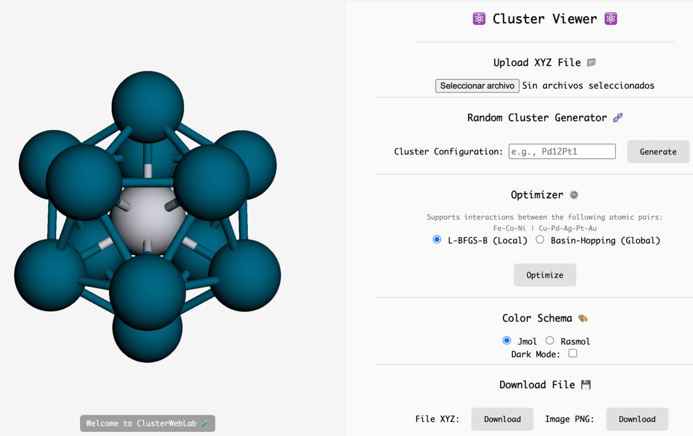
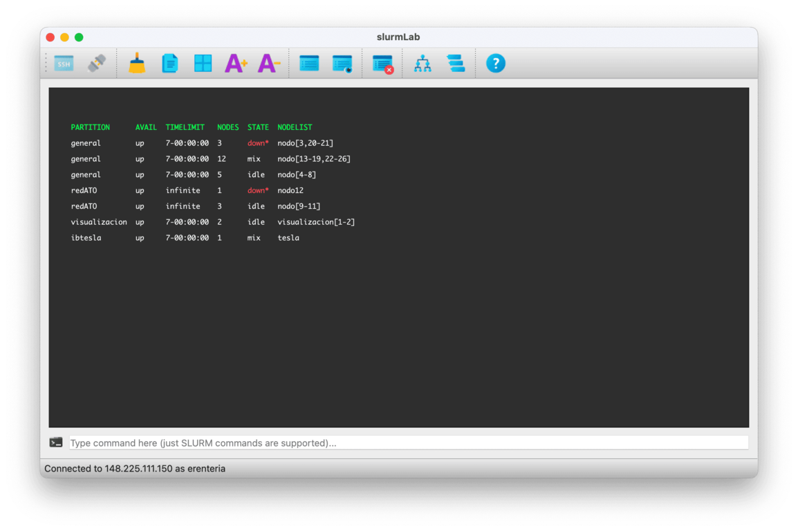

I am Arturo Rentería
Name: Arturo Rentería
Profile: Python Developer & Nanotechnology Researcher
Email: arturylab@gmail.com
Phone: (+52) 662-336-8639
Skills
Scientific Expertise
- Mathematics and Numerical Analysis: Multivariable Calculus, Linear Algebra, Probability Theory, Inferential Statistics, Data Analysis, and Numerical & Optimization Methods.
- Physical Chemistry and Computational Modeling: Quantum Mechanics, Computational Chemistry, and Density Functional Theory (DFT).
About me
I’m a Python developer with a strong academic background in Nanotechnology and Industrial & Systems Engineering. My journey blends scientific research, software development, and education. I have several years of experience teaching mathematics, programming, and numerical methods at both high school and university levels.
Technically, I specialize in backend development, data science, DevOps practices, and high-performance computing. I’ve developed scientific applications involving molecular visualization, reaction pathway simulations, and cluster job management. I work fluently with tools like Flask, Django, PyQt, Git, Docker, Azure, and both SQL and NoSQL databases.
I’m passionate about solving complex problems through code and computational modeling. My projects often bridge the gap between science and software, enabling researchers and students to explore data and simulations interactively.
I'm committed to continuous learning and improvement, guided by agile methodologies such as Agile, Lean, and Kaizen. I thrive in multidisciplinary environments and seek to contribute to impactful, scalable, and innovative solutions.
Resume
Python developer and scientific researcher with a background in Nanotechnology.
Sumary
Arturo Rentería
Python developer and nanotechnology researcher with experience in backend development, data science, and high-performance computing. Passionate about problem-solving, scientific modeling, and building useful tools for research and education.
- Hermosillo, Sonora, Mexico
- (+52) 662-336-8639
- arturylab@gmail.com
Education
Ph.D. in Nanotechnology
Aug 2022 – Jul 2026
University of Sonora, Hermosillo, Mexico
Thesis: Structural, Electronic, and Magnetic Properties of FelComNin Clusters (l+m+n=38) using DFT studies.
Master’s Degree in Nanotechnology
Aug 2020 – Jul 2022
University of Sonora, Hermosillo, Mexico
Thesis: Potential Energy Surface Analysis and Transition State Search in Bimetallic Nanoalloy Clusters Pd12Pt1.
Bachelor’s Degree in Industrial and Systems Engineering
Aug 2000 – May 2005
University of Sonora, Hermosillo, Mexico
Professional Experience
University Lecturer
Aug 2024 – Dec 2024
Universidad Estatal de Sonora (UES), Mexico
- Taught undergraduate courses in Integral Calculus and Numerical Methods.
High School Teacher – Mathematics & Computer Science
Aug 2017 – Jan 2024
Colegio de Bachilleres del Estado de Sonora (COBACH), Mexico
- Taught subjects including Computer Science, Mathematics, Differential and Integral Calculus, and Probability and Statistics.
University Lecturer
Aug 2019 – Jul 2020
Instituto Tecnológico Superior de Cajeme (ITESCA), Mexico
- Taught courses such as Differential, Integral and Vector Calculus, Algorithms and Programming Languages, Material Properties, and Industrial Engineering topics.
IT Systems Manager
Jul 2013 – Jan 2018
Secretaría de Desarrollo Social – PROSPERA Program, Mexico
- Managed and maintained the program's information systems and technology infrastructure (hardware, software, networks, databases).
- Provided technical support, resolved incidents, and ensured operational continuity.
- Generated reports for decision-making and contributed to data protection and policy compliance.
Certifications & Courses
Ongoing learning journey in software development, data science, and game development.
Microsoft Python Developer (Coursera)
• Programming fundamentals
• Data analysis & visualization
• Automation & scripting
• Web development
• Advanced techniques
• Python projects
Python & CS (Platzi)
• Programming basics
• Python: comprehensions, functions & Error handling
• OOP & algorithms with Python
• English for developers
Unity Essentials Pathway (Unity)
Game development fundamentals using Unity and C#. Includes Unity Editor navigation, basic scripting, and project building.
Portfolio
Selected projects focused on scientific computing, data visualization, and high-performance workflows using Python.
- All
- Scientific
- Apps

{kind=link}

{kind=link}
{kind=link}
Frequently Asked Questions
Here are some answers to common questions about my background, projects, and areas of collaboration. Feel free to reach out if you want to know more.
1. Can I collaborate with you on a scientific project?
Absolutely. I'm open to research collaborations, especially in computational chemistry, nanotechnology, or scientific visualization. Just send me a message with your idea or proposal.
2. What kind of development work do you specialize in?
I focus on backend development with Python, including scientific apps, data pipelines, Flask/Django projects, and GUI apps using PyQt. I also work with high-performance computing (SLURM, SSH, Linux).
3. Do you offer mentoring or guidance for students?
Yes, I enjoy supporting students and junior developers. Whether it's Python, math, or how to get started with scientific programming, feel free to contact me.
4. Are your projects open-source?
Yes, most of my projects are available under open-source licenses on GitHub. You can fork them, suggest improvements, or contribute via pull requests.
5. Can I hire you for freelance or consulting work?
Depending on the scope and timeline, I'm open to select freelance projects related to Python development, HPC, data analysis, or research tools. Let's talk!
Contact
If you'd like to collaborate, have questions about my projects, or just want to connect, feel free to reach out. I'm always open to new ideas and opportunities.
Address
Hemrosillo, Sonora, México
Call Me
(+52) 662-336-8639
Email Me
arturylab@gmail.com